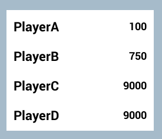

What is MarkLight?
MarkLight offers XUML (eXtensible Unity Markup Language) a declarative design language similar in syntax to HTML but instead of defining the contents of a webpage it is used to design scenes in Unity.
XUML can be used to create views and define their relationship to the underlying game logic. Views are modular building blocks that can represent anything in the scene (UI widgets, meshes, lights, etc):
XUML can be used to create views and define their relationship to the underlying game logic. Views are modular building blocks that can represent anything in the scene (UI widgets, meshes, lights, etc):
XUML & View Model
MainMenu.xml (XUML)
<MainMenu>
<Group Spacing="10px">
<Button Text="Play" Click="StartGame" />
<Button Text="Options" />
<Button Text="Quit" />
</Group>
</MainMenu>
MainMenu.cs (View Model)
public class MainMenu : UIView
{
public void StartGame()
{
// called when user clicks on "Play" button
Debug.Log("StartGame() called");
}
}
The above example shows how to create a simple main menu view that responds to user interaction:

Through this simple mechanism (called MVVM) you can build upon existing views and create advanced re-usable functionality with ease. It also serves to decouple presentation from game logic which helps keep designer and developer responsibilities separate.
Data Binding
Data binding solves the problem of keeping your game data synchronized with its presentation. Here is an example of an highscore list generated from dynamic data using a custom template:
Highscore.xml
<List Items="{Highscores}">
<ListItem IsTemplate="True">
<Group Orientation="Horizontal">
<Label Text="{#Item.PlayerName}" />
<Label Text="{#Item.Score}" />
</Group>
</ListItem>
</List>
Highscore.cs
public class HighscoreList : UIView
{
public ObservableList<Highscore> Highscores;
public override void Initialize()
{
// populate highscores from data source
}
}

If you update the highscore list, e.g. add another entry, the view is automatically updated with no additional code required.
If you update the highscore list, e.g. add another entry, the view is automatically updated with no additional code required.
And Much More...
Some more key features includes multi binding, animations, theming & styling and state management. The framework comes with 40+ views in 3 different themes. It's compatible with PC, Mac, iOS, Android, WebGL, Android and Windows Phone. Full source is included.
It's a new elegant and intuitive way of designing and developing scenes in Unity. It speeds up development, it bridges the gap between designers and programmers through a common language, it allows designs to be more easily shared in the community. It's intuitive, powerful and easy to use.

{kind=link}
{kind=link}
{kind=link}
{kind=link}